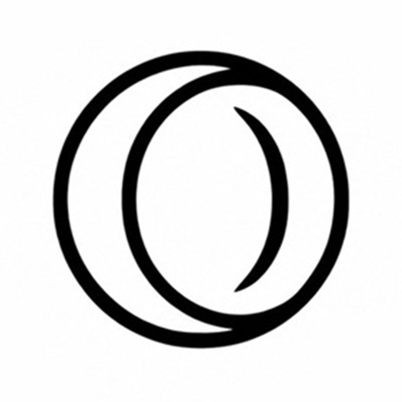

Search the web
Website 1
Website 2
Website 3
Website 4
Website 5
Website 6
Make the browser yours
Shape the colors, visuals, and sounds of your browser through one guided workspace
Brought to you by the original Opera GX modding YouTuber, MrJamz · Sponsor this project here
Choose a starting point
Choose the categories you want to include in your mod
Start with the essentials that define your mod
Optional components for a more complete browser experience
Popular choices / Theme
Schema v2
COLOR
Buttons, active tabs, outlines, and browser highlights
COLOR
The foundation Opera GX uses for browser surfaces and panels
◆ Opera GX locks GX secondary base lightness to 16% in dark mode
More modding / App icon
Schema v2
ICON MEDIA
This will be the desktop or mobile icon for the application
PNG · JPG
Recommended icon size: 512×512
Curved corners are exported as transparent pixels
LIVE PREVIEW
No icon selected
CORNER CURVE GUIDE

Popular choices / Wallpaper
Schema v2
MEDIA
Add a static image or animated file for the selected browser mode. Files remain only in this browser visit
PNG · JPG · WEBP · WEBM · MP4
Animated wallpaper detected
START PAGE
Enable additional settings here to custom tune your wallpaper page
LIVE PREVIEW
This simulated start page uses the selected theme’s accent and GX secondary base colors
Popular choices / Music
Schema v2
AUDIO
Add the names and authors that Opera GX should show for your mod’s music
MP4 audio will be converted to MP3 in this browser
More modding / Cursors
Choose a tile to assign a custom cursor role. Pink cursors are shown only as visual references and are never saved.
48 roles
.cur or .ani file. Only uploaded files are saved; animated cursors play inside their tile.Final setup / Mod icon
512×512 PNG
MOD ICON MEDIA
This 512×512 image identifies your mod after it is installed in Opera GX
PNG · JPG · WEBP
Output is always saved as icon_512.png
Curved corners are exported as transparent pixels
LIVE PREVIEW
Loading icon_512.png
Build review
Review the saved choices that will be included in your mod
Schema v2